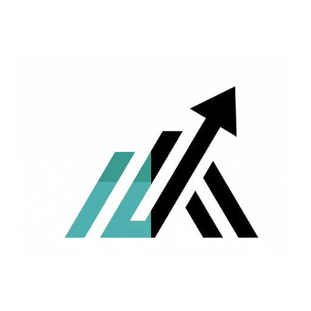

☰

AI 제품 입문부터 마스터까지
WaytoAIC · AI 커머스
0 / 0
🎓 수료증
🎓 전 강의를 마치면 수료증을 드려요
이름은 계정 닉네임을 따릅니다
수료증 보기 ›
공유
학습 취소
Language
中文
English
한국어
🎓
축하합니다! 모든 강의를 수료했습니다
수료증이 준비되었습니다 · 이름은 계정 닉네임을 따릅니다
수료증 받기
WaytoAIC 커뮤니티 가입
×
‹
이전 강의
—
완료!
›
다음 강의
—